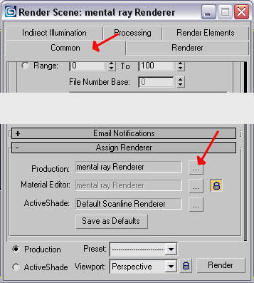
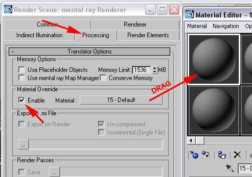
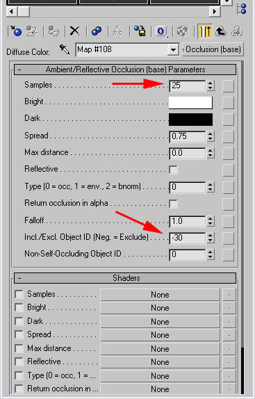
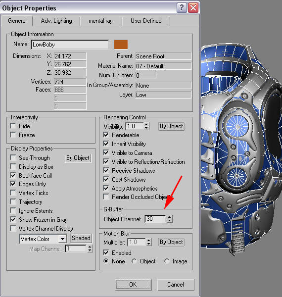
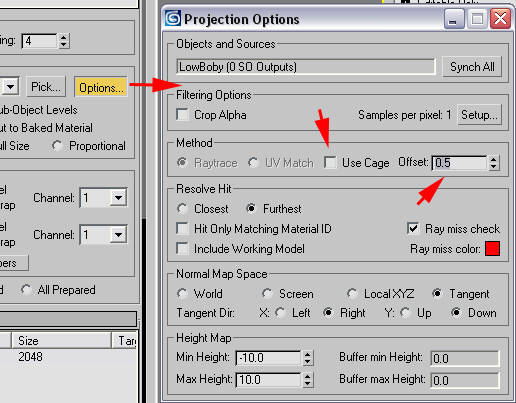
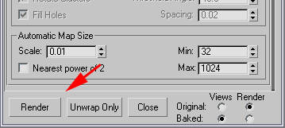

UDN
Search public documentation:
CreatingShadeMapsKR
English Translation
日本語訳
中国翻译
Interested in the Unreal Engine?
Visit the Unreal Technology site.
Looking for jobs and company info?
Check out the Epic games site.
Questions about support via UDN?
Contact the UDN Staff
日本語訳
中国翻译
Interested in the Unreal Engine?
Visit the Unreal Technology site.
Looking for jobs and company info?
Check out the Epic games site.
Questions about support via UDN?
Contact the UDN Staff
셰이드 맵 제작 기법
문서 변경내역: Shane Caudle 작성.
개요
절차
단계 1
먼저 MentalRay를 Renderer로 지정해야 합니다. Renderer 설정을 열고 Common 탭으로 간 다음 Assign Renderer 탭을 엽니다. ... 버튼을 클릭하여 Mental Ray를 선택합니다.
단계 2
Processing 탭을 클릭하여 Material Overide를 유효화 합니다. Material을 클릭해서 Material Editor 안으로 끌어 넣고, 이를 인스턴스로 만듭니다.
단계 3
Diffuse 탭을 클릭하고 Ambient/Reflective Occlusion을 선택합니다.
단계 4
앰비언트 오클루전 셰이더 세팅창이 뜹니다. 셰이드 맵을 얼마나 부드럽게 할 것인가에 따라 샘플 수를 16에서 25, 50까지 바꾸면 됩니다. 수치가 커 질수록 오래 걸립니다. 이제 로우폴리 모델을 계산에서 제외하도록 지정해주어야 합니다. 그렇지 않으면 하이폴리 오브젝트가 튀어나오는 곳에서는 언제나 로우폴리가 하이폴리 오브젝트에 그림자를 드리웁니다 (로우폴리가 그림자를 드리우지 않도록 설정을 해보았지만, 되지 않았습니다) . Incl./Excl. Object ID 를 로우폴리의 ID로 설정해주어야 합니다. 마이너스 값은 제외시키는 것을 뜻하므로, 이를 -30으로 설정했습니다. (그림자를 투영하지 않게 로우 폴리를 설정할 수 있지만, 원하는대로 작동되지 않아 보입니다). 로우 폴리 ID대 Incl./Excl. Object ID의 값을 설정해야 합니다. 음수 값은 로우 폴리가 포함되지 않게 함으로 -30으로 설정하십시오.
단계 5
위를 향하는 화살표 아이콘을 클릭하여 소재 트리의 맨 위로 갑니다. 그 다음 Self-Illumination의 값을 100으로 설정합니다.
단계 6
이제 로우폴리 모델의 Object ID를 앰비언트 오클루전 셰이더에서 제외되도록 설정한 값 으로 설정해 주어야 합니다. 이 경우 그 값은 30입니다. 로우폴리 모델을 오른 클릭해서 속성 창을 연 다음, G-Buffer에서 Object Channel을 30으로 하면 됩니다.
단계 7
이제 Render to Texture 과정을 위한 장면 설정을 해야 합니다. 로우폴리 모델을 선택하고 Projection 모디파이어를 적용합니다. Geometry Selection에서, Pick List를 클릭하여 하이폴리 모델을 선택합니다.
단계 8
나만의 HighPoly 모델 선택 세트를 만들어 Projection Modifier 에 추가시 더욱 간편하게 사용할 수 있습니다. Selection Sets 에서 하이폴리 세트를 선택하십시요. 이 경우 선택된 하이폴리 세트는 Chest_High 입니다.
단계 9
하이폴리 모델을 추가하고 나면 케이지가 혼란스러워 집니다. 이 것은 Cage 설정에서 rest 버튼을 누르면 해결됩니다. 이제 여러분은 Push 값을 사용하여 필요한 추적 거리를 알아볼 수 있습니다. 케이지를 사용할 필요 없이 수동으로 렌더 텍스처 옵션내의 추적 거리를 설정하면 SHTools 또는 3D Studio Max의 새 버전을 사용한 것과 같은 근접한 결과를 가져다 줍니다.
단계 10
0 (숫자 0) 키를 눌러 Render To Texture 도구를 끌어냅니다. Projection Mapping에서 Enable 을 클릭합니다. Padding을 4 정도로 설정합니다. Use Existion Mapping이 체크되었는지 확인하십시요. Output 아래에서 Add를 클릭하고, DiffuseMap을 선택합니다.
단계 11
SHTools 또는 3D Studio Max의 새 버전에서와 같은 결과를 원하면 Options 버튼을 눌러 Use Cage의 체크를 해제 하십시오. 그렇지 않으면 Projection Cage의 Push 거리가 사용되게 됩니다. Offset은 원하는 추적거리를 가리킵니다.
단계 12
출력 경로 및 파일 이름을 원하는대로 바꿉니다. 그 다음 해상도를 설정합니다. Shadows가 체크되었는지 확인하십시요, 아니면 흰색의 이미지를 얻게 됩니다.
단계 13
Render 버튼을 누르십시요.
단계 14
최종 셰이드 맵입니다. 텍스처링에 사용하기에 안성맞춤입니다. ;) 맘껏 즐기세요!